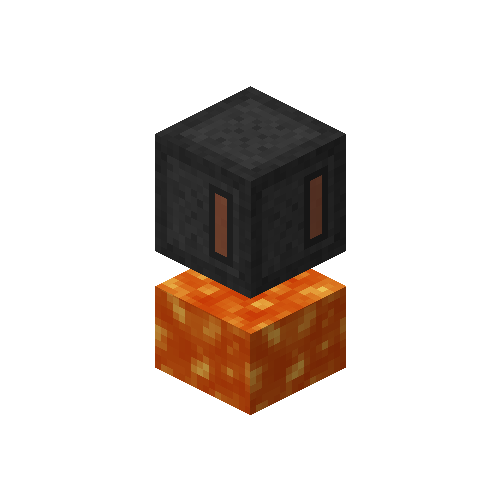

A minecraft mod about never leaving your house,
but, through the building of machines, making every available item anyway.
Also includes several lifestyle convenience, design enrichment and simply fun
blocks, items and multiblock to enrich the experience.
Introduction
Hearth Well is a mod about construction. Without leaving your house
you will get the materials you need to build everything you want.
Between crafting simple blocks and building multiblock structures,
you will never be idle.
The objectives of this mod are that you build the machines you need
(and hopefully have fun doing it) to give purpose to your home space,
and that everything is as simple as possible, without complex GUI's or numbers,
while still having enough diversity to keep you engaged to progress through the mod.
Main Progression
In this page you will find most of the blocks and items required to progress
through the mod, and will give you a general idea of how most crafting mechanics work.
You are in a barren, uninhabited, flat stone world? Good. You'll make it yours.
The first items you're going to need require wood in a world of stone.
That's why you have that seed in your hand. Hold the right button and point it at the floor to sprout life.
With wood you should be able to create this items:
Heavy Ingot. You'll need quite a few of these. This will be with you for the rest of the journey on this place.
Empty Rod. One or two will be enough for now. Hold right click to fill them with some mysterious life essence.
You are now on your way to get everything you ever wanted. Bellow are some of the most important steps in progressing through the mod.
The Crushing Block: This block will let you shatter materials
into its smaller components.
Myst Dust can be multiplied by infusing (right clicking) grass with it and waiting.
This mysterious dust is the base for many items and blocks in this mod.
The Generator Block: With a simple lava source beneath it, this block will generate energy required to power your other machines.
Produces and holds up to 120 energy in a radius of 10 blocks. The lava might not last forever though.
The Freezer. Will freeze water into snow or ice, and lava into obsidian.
Has 5 radius and consumes 30 energy per operation.

The Precision Grinder: A multiblock structure that allows
you to grind your materials into other ones.
Requires a Grinding Wheel to be inserted, but not all operations are available
for every grinding wheel.
Be careful not to grind big stacks of materials or the grinder can jam
and the grinding wheel can jump out.
In a more common world, the Precision Grinder can be used as an early form of resource multiplication
as it will slightly increase the yield of mined ores.
Requires 100 Energy per Operation.
Different crystal shards are required for many items throughout the mod
but are easily obtained from mysterious trees.
Core Blocks and Shards: Use the various shards (that you got from crushing
crystals) on the cores to infuse them with that shard element.
Then feed the infused core the required materials to transform it into something else.
Craft and use the Obsidian Displacer to get obsidian before having a
diamond pickaxe. This lets you build the Nether Portal with no diamonds.
Obtain Nether Crystals by sending your crystals through the nether portal into the Nether.
The Heat Furnace: A multiblock structure that will
cook and smelt without delay or consumption of materials.
It will, however, sometimes consume some water from the top.
Requires 100 Energy per Operation.
The Separator: A multiblock structure that allows you to
divide complex constructions into its components.
The components will exit the machine in the various outputs.


 Heavy Ingot. You'll need quite a few of these. This will be with you for the rest of the journey on this place.
Heavy Ingot. You'll need quite a few of these. This will be with you for the rest of the journey on this place.